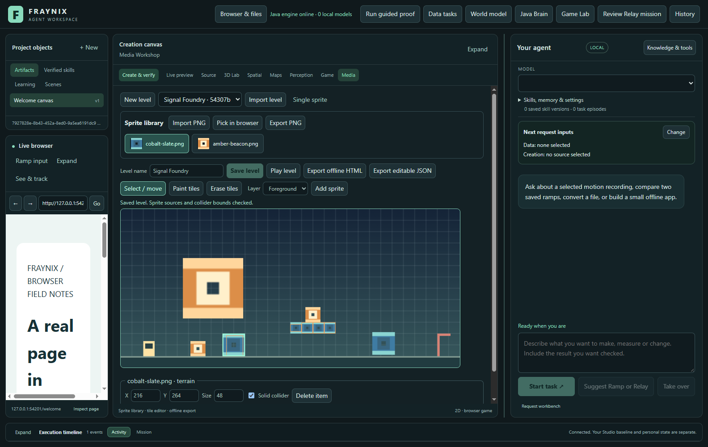
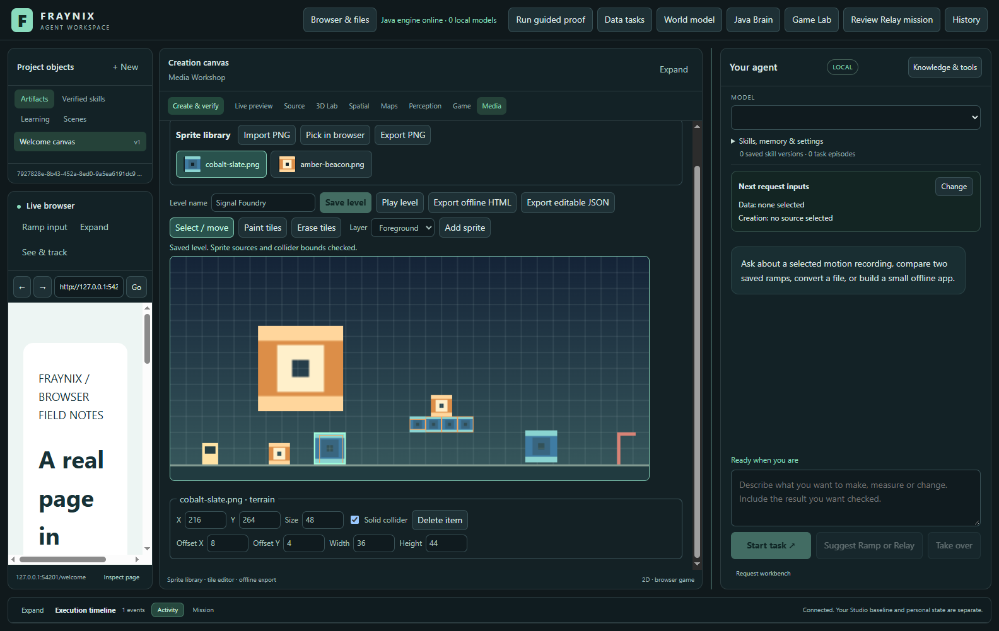
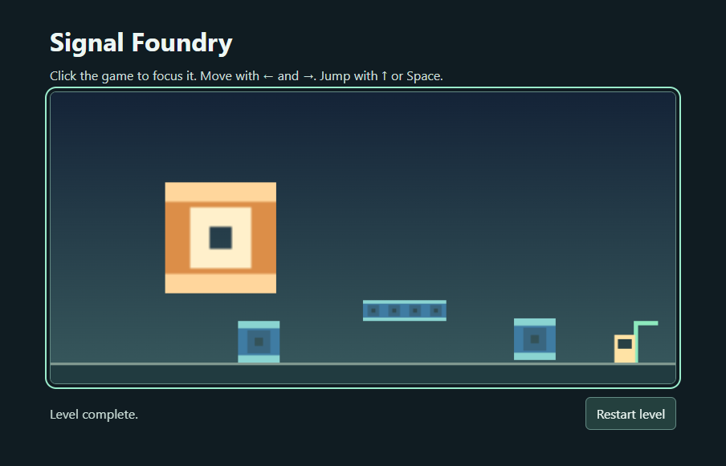

Build playable tile levels from a shared sprite library
Reuse sprites, drag placements, paint tiles and edit the colliders in an offline playable level.
Two sprites were reused across two courses. Signal Foundry passed edited collider, restart and offline play checks.

Sprite library and the Signal Foundry tile level

Inspecting an offset solid collider

Completing the exported level offline
System files
Open source